Data: email, messages, calls and radio
Source:vignettes/articles/data-communication.Rmd
data-communication.RmdDirected messages between people in an organisation or community: email, instant messages, phone calls, police radio and nominations. These logs have strong repetition and reciprocity and, where the clock is known, daily and weekly cycles, which makes them the standard test bed for endogenous statistics and for time-shifted sampling of global covariates.
The data catalogue lists every dataset with its licence. Figures and numbers on this page are aggregates computed from the files as published; each section links the source and the code that reads it.
| dataset | events | actors | licence | amorem |
|---|---|---|---|---|
| Manufacturing company email metadata and corporate hierarchy | 82,876 | 167 | CC0 1.0 | bundled as radoslaw_email,
radoslaw_hierarchy
|
| SNAP: CollegeMsg (UC Irvine messages) | 59,835 | 1,899 | none stated | bundled as college_msg since an earlier
release; licence under review |
| SNAP: email-Eu-core temporal (four departments) | 332,334 | 986 | none stated | bundled as email_eu_core since an earlier
release; licence under review |
| Network Repository: Enron employees email | 47,088 | 150 | CC BY-SA | share-alike |
| eventnet example data (Enron, Apache, Wikipedia hyperevents) | 39,752 | 6,062 | GPL-3.0 (source repository/package) | GPL only |
| Copenhagen Networks Study interaction data | 3,600 | 536 | MIT | bundled as copenhagen_calls,
copenhagen_sms, copenhagen_actors
|
| statnet relevent workshop data (WTC radio, classroom) | 481 | 35 | GPL-3.0 (source repository/package) | GPL only |
| 4PCAN alter nominations | 56,570 | 2,491 | CC BY 4.0 | can bundle |
| networkDynamicData package data | 259 | 37 | GPL-3.0 (source repository/package) | GPL only |
| KONECT: Dutch college friendship waves (van de Bunt) | 3,062 | 32 | unknown (site unreachable 2026-10-17) | obtain from source |
Manufacturing company email metadata and corporate hierarchy
Source: https://doi.org/10.7910/DVN/6Z3CGX · Licence:
CC0 1.0 · Status in amorem: bundled as
radoslaw_email, radoslaw_hierarchy.

Who interacts with whom. The 60 actors of the busiest pairs, out of 167; events between two of them are 64.9% of all events. Each actor’s three strongest ties are drawn (127 of 1,020 pairs that ever interacted): wider, darker lines carry more events, larger dots are more active actors, and colours are groups found by modularity (Louvain).
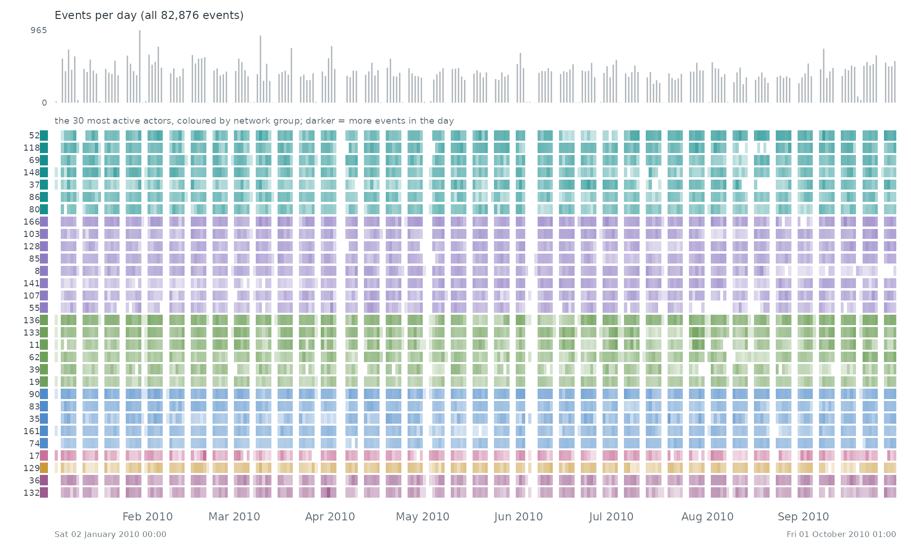
When. Each row is one of the 30 most active actors of the network, coloured by its group there; a cell is darker the more events (with anyone) the actor took part in during that stretch of time. The grey bars on top count all 82,876 events.
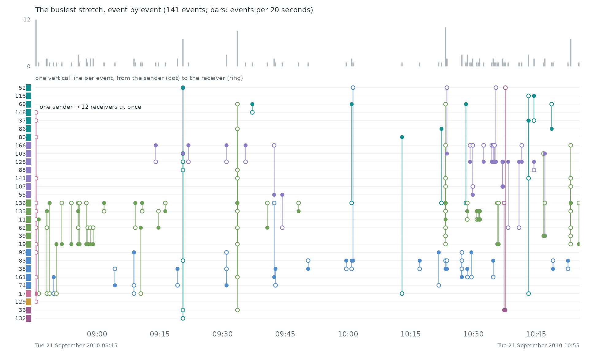
Event by event. The busiest stretch of the record, Tue 21 September 2010 08:45 to Tue 21 September 2010 10:55, event by event: each vertical line is one event between two of the actors above, from the sender (dot) to the receiver (ring).
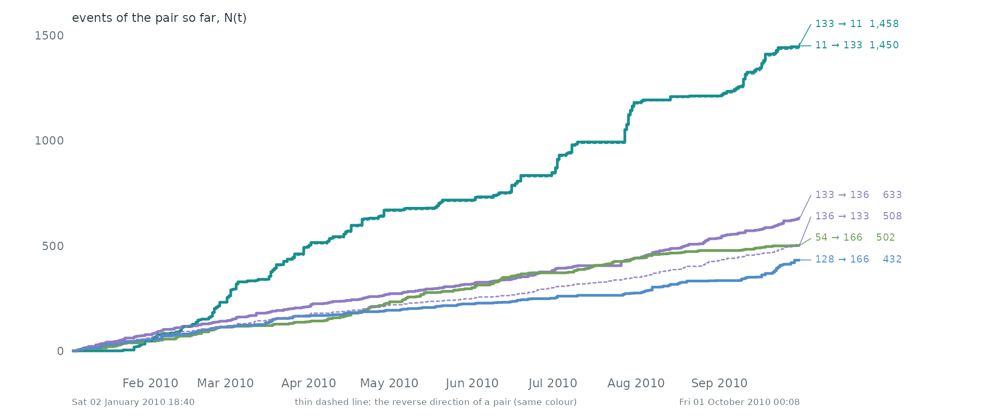
Pairs as counting processes. The counting process N(t) of the 6 busiest pairs: the number of events of the pair up to time t. Together they make 6.0% of all events. Steep stretches are bursts and flat ones silences. 4 of these pairs are the reverse of another, so replies run alongside the messages they answer.
Statistical profile.
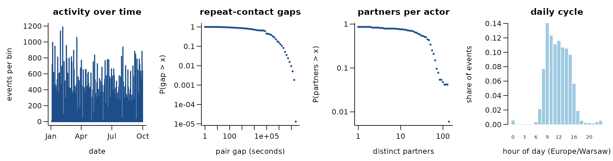
82,876 directed events among 167 actors over 271.2 days (5,783 distinct ordered pairs). 93.0% of events repeat an earlier ordered pair; if every event chose a pair at random the share would be 68.2%. 92.1% of events answer an earlier event in the opposite direction. The burstiness coefficient of the gaps between successive events of the same pair is 0.45 (0 for a Poisson process, positive when events cluster in bursts); the most active tenth of the actors take part in 40.9% of events (Gini 0.62). 30.3% of events share their time stamp with an earlier one. the CC0 release of the manufacturing-company email bundled in amorem as radoslaw_email
A conditional logit on the first 4,000 events (one sampled control per event) gives:
| term | estimate | s.e. |
|---|---|---|
| log(1 + sender’s past events) | 0.66 | 0.04 |
| log(1 + receiver’s past events received) | 0.51 | 0.04 |
| log(1 + past events receiver -> sender) | 2.88 | 0.15 |
Get the data
download.file("https://dataverse.harvard.edu/api/access/datafile/3655318?format=original", "communication.csv", mode = "wb")
download.file("https://dataverse.harvard.edu/api/access/datafile/3655319?format=original", "reportsto.csv", mode = "wb")
download.file("https://dataverse.harvard.edu/api/access/datafile/3758743?format=original", "nurek2020combining.bib", mode = "wb")
download.file("https://dataverse.harvard.edu/api/access/datafile/3758744?format=original", "description.txt", mode = "wb")A reader that turns these files into a
(sender, receiver, time) table is
readers[["radoslaw-email-dataverse"]] in data-raw/catalogue/readers.R.
SNAP: CollegeMsg (UC Irvine messages)
Source: https://snap.stanford.edu/data/ · Licence: none
stated · Status in amorem: bundled as college_msg
since an earlier release; licence under review.
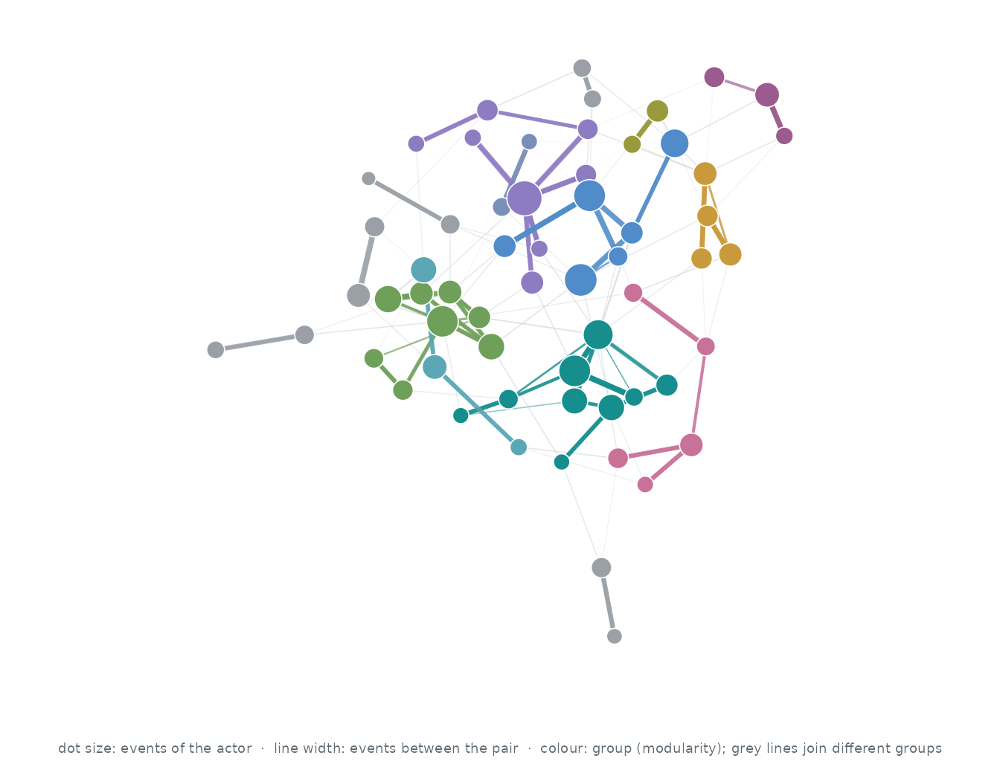
Who interacts with whom. The 60 actors of the busiest pairs, out of 1,899; events between two of them are 8.9% of all events. Each actor’s three strongest ties are drawn (116 of 226 pairs that ever interacted): wider, darker lines carry more events, larger dots are more active actors, and colours are groups found by modularity (Louvain).
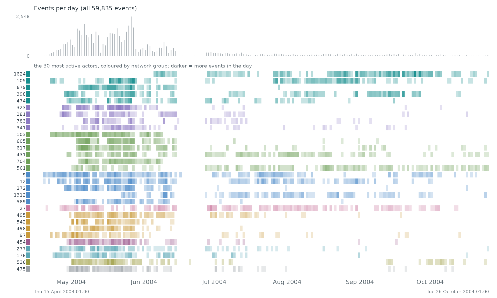
When. Each row is one of the 30 most active actors of the network, coloured by its group there; a cell is darker the more events (with anyone) the actor took part in during that stretch of time. The grey bars on top count all 59,835 events.
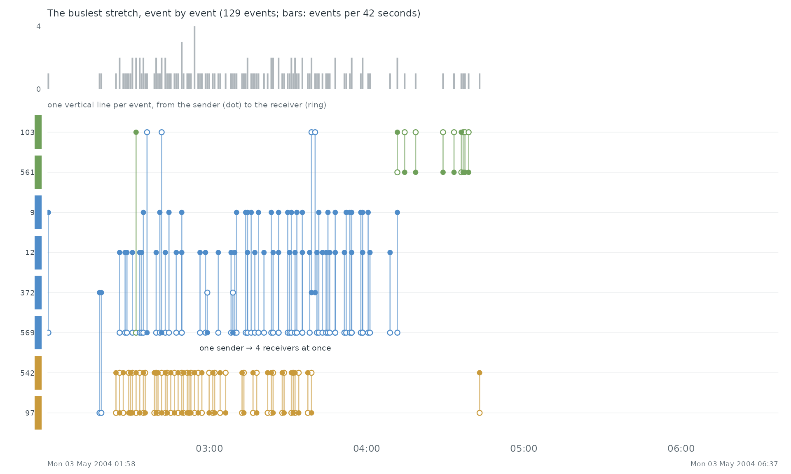
Event by event. The busiest stretch of the record, Mon 03 May 2004 01:58 to Mon 03 May 2004 06:37, event by event: each vertical line is one event between two of the actors above, from the sender (dot) to the receiver (ring).
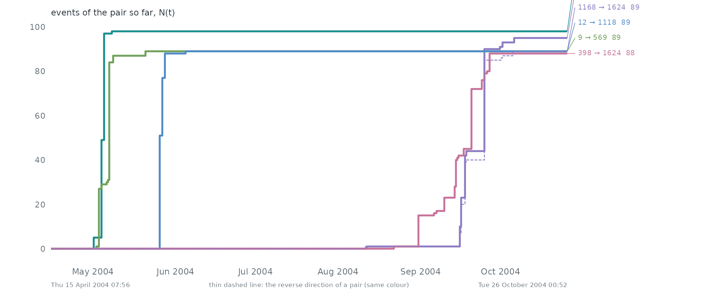
Pairs as counting processes. The counting process N(t) of the 6 busiest pairs: the number of events of the pair up to time t. Together they make 0.9% of all events. Steep stretches are bursts and flat ones silences. 2 of these pairs are the reverse of another, so replies run alongside the messages they answer.
Statistical profile.
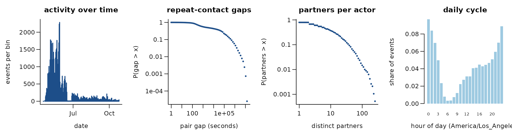
59,835 directed events among 1,899 actors over 193.7 days (20,296 distinct ordered pairs). 66.1% of events repeat an earlier ordered pair; if every event chose a pair at random the share would be 0.8%. 60.4% of events answer an earlier event in the opposite direction. The burstiness coefficient of the gaps between successive events of the same pair is 0.58 (0 for a Poisson process, positive when events cluster in bursts); the most active tenth of the actors take part in 60.2% of events (Gini 0.75). Unix time; UC Irvine
A conditional logit on the first 4,000 events (one sampled control per event) gives:
| term | estimate | s.e. |
|---|---|---|
| log(1 + sender’s past events) | 1.13 | 0.05 |
| log(1 + receiver’s past events received) | 0.91 | 0.05 |
| log(1 + past events receiver -> sender) | 5.61 | 0.55 |
Get the data
download.file("https://snap.stanford.edu/data/CollegeMsg.txt.gz", "CollegeMsg.txt.gz", mode = "wb")
download.file("https://snap.stanford.edu/data/CollegeMsg.html", "CollegeMsg.html", mode = "wb")A reader that turns these files into a
(sender, receiver, time) table is
readers[["snap-collegemsg"]] in data-raw/catalogue/readers.R.
SNAP: email-Eu-core temporal (four departments)
Source: https://snap.stanford.edu/data/ · Licence: none
stated · Status in amorem: bundled as
email_eu_core since an earlier release; licence under
review.
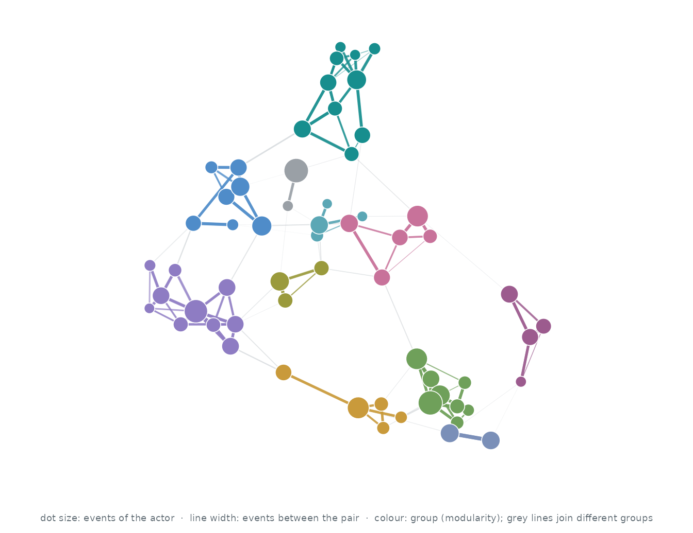
Who interacts with whom. The 60 actors of the busiest pairs, out of 986; events between two of them are 17.9% of all events. Each actor’s three strongest ties are drawn (121 of 375 pairs that ever interacted): wider, darker lines carry more events, larger dots are more active actors, and colours are groups found by modularity (Louvain).
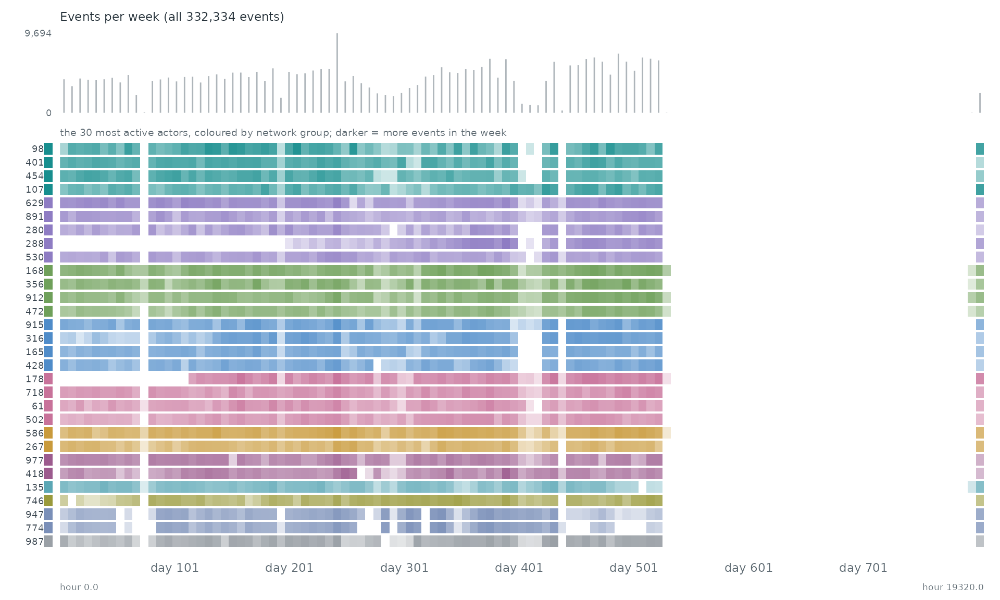
When. Each row is one of the 30 most active actors of the network, coloured by its group there; a cell is darker the more events (with anyone) the actor took part in during that stretch of time. The grey bars on top count all 332,334 events.
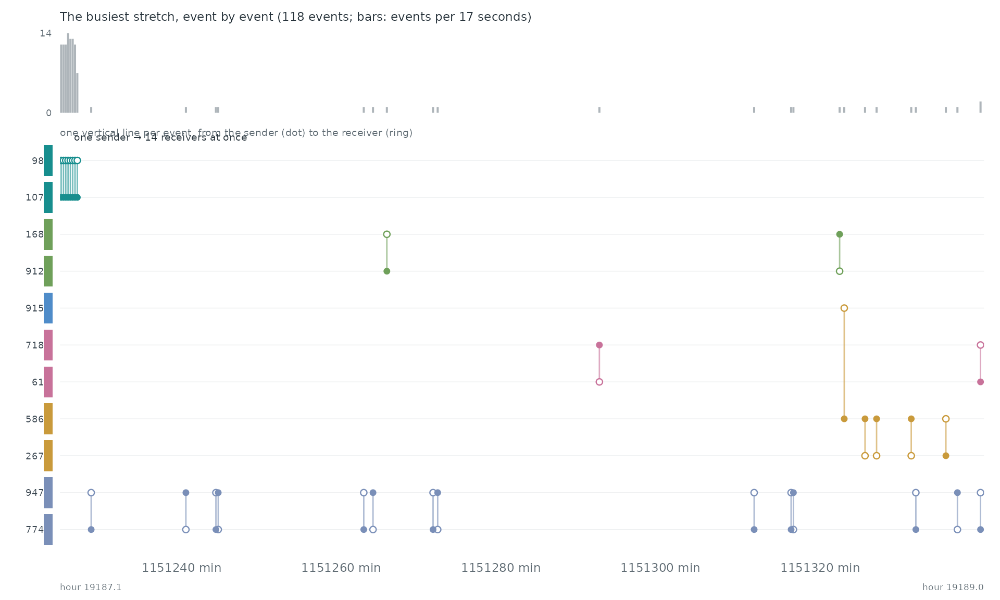
Event by event. The busiest stretch of the record, hour 19187.1 to hour 19189.0, event by event: each vertical line is one event between two of the actors above, from the sender (dot) to the receiver (ring).
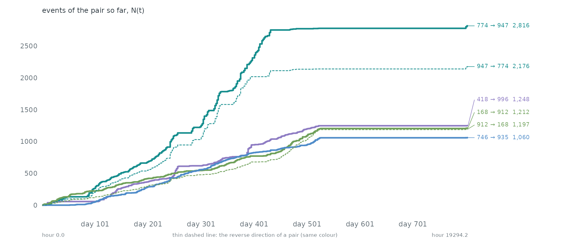
Pairs as counting processes. The counting process N(t) of the 6 busiest pairs: the number of events of the pair up to time t. Together they make 2.9% of all events. Steep stretches are bursts and flat ones silences. 4 of these pairs are the reverse of another, so replies run alongside the messages they answer.
Statistical profile.
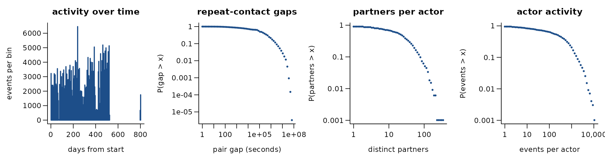
332,334 directed events among 986 actors over 803.9 days (24,929 distinct ordered pairs). 92.5% of events repeat an earlier ordered pair; if every event chose a pair at random the share would be 15.3%. 84.0% of events answer an earlier event in the opposite direction. The burstiness coefficient of the gaps between successive events of the same pair is 0.50 (0 for a Poisson process, positive when events cluster in bursts); the most active tenth of the actors take part in 51.0% of events (Gini 0.69). 37.4% of events share their time stamp with an earlier one. full network; seconds from an unstated origin
A conditional logit on the first 4,000 events (one sampled control per event) gives:
| term | estimate | s.e. |
|---|---|---|
| log(1 + sender’s past events) | 0.90 | 0.04 |
| log(1 + receiver’s past events received) | 0.51 | 0.05 |
| log(1 + past events receiver -> sender) | 5.73 | 0.45 |
Get the data
download.file("https://snap.stanford.edu/data/email-Eu-core-temporal.txt.gz", "email-Eu-core-temporal.txt.gz", mode = "wb")
download.file("https://snap.stanford.edu/data/email-Eu-core-temporal-Dept1.txt.gz", "email-Eu-core-temporal-Dept1.txt.gz", mode = "wb")
download.file("https://snap.stanford.edu/data/email-Eu-core-temporal-Dept2.txt.gz", "email-Eu-core-temporal-Dept2.txt.gz", mode = "wb")
download.file("https://snap.stanford.edu/data/email-Eu-core-temporal-Dept3.txt.gz", "email-Eu-core-temporal-Dept3.txt.gz", mode = "wb")
download.file("https://snap.stanford.edu/data/email-Eu-core-temporal-Dept4.txt.gz", "email-Eu-core-temporal-Dept4.txt.gz", mode = "wb")
download.file("https://snap.stanford.edu/data/email-Eu-core-temporal.html", "email-Eu-core-temporal.html", mode = "wb")A reader that turns these files into a
(sender, receiver, time) table is
readers[["snap-email-eu-core-temporal"]] in data-raw/catalogue/readers.R.
Network Repository: Enron employees email
Source: https://networkrepository.com/policy.php · Licence: CC BY-SA · Status in amorem: share-alike: redistributable only under the same licence.
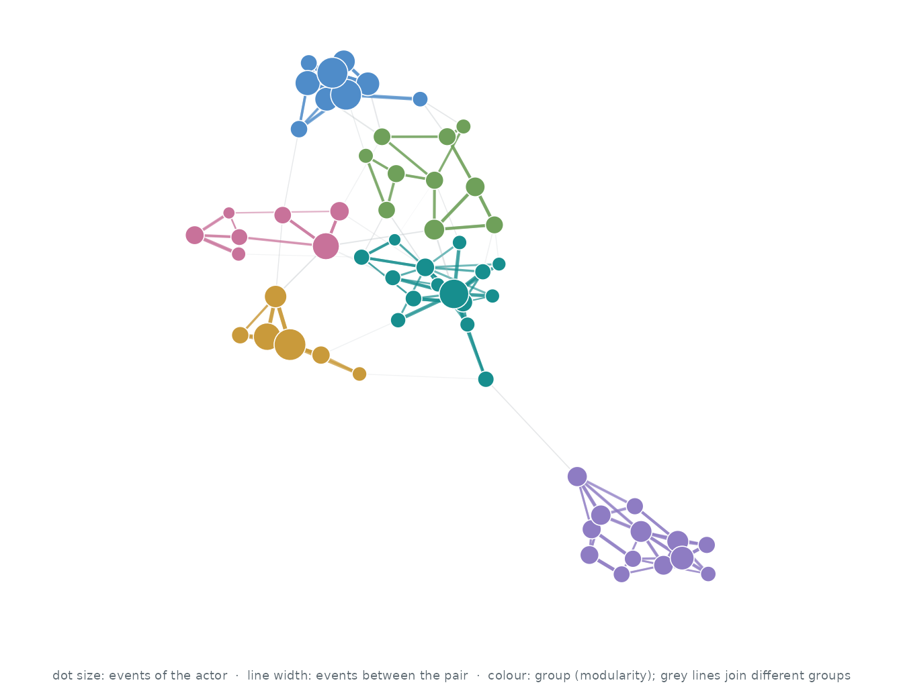
Who interacts with whom. The 60 actors of the busiest pairs, out of 150; events between two of them are 67.7% of all events. Each actor’s three strongest ties are drawn (132 of 427 pairs that ever interacted): wider, darker lines carry more events, larger dots are more active actors, and colours are groups found by modularity (Louvain).
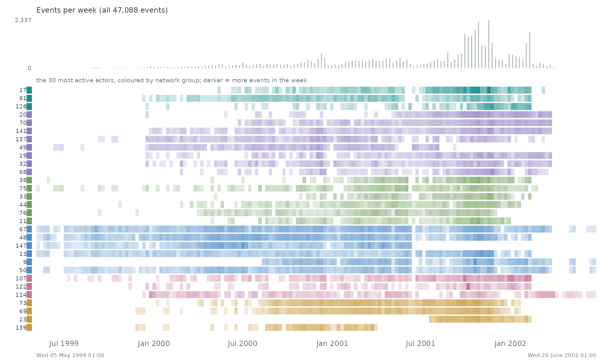
When. Each row is one of the 30 most active actors of the network, coloured by its group there; a cell is darker the more events (with anyone) the actor took part in during that stretch of time. The grey bars on top count all 47,088 events.
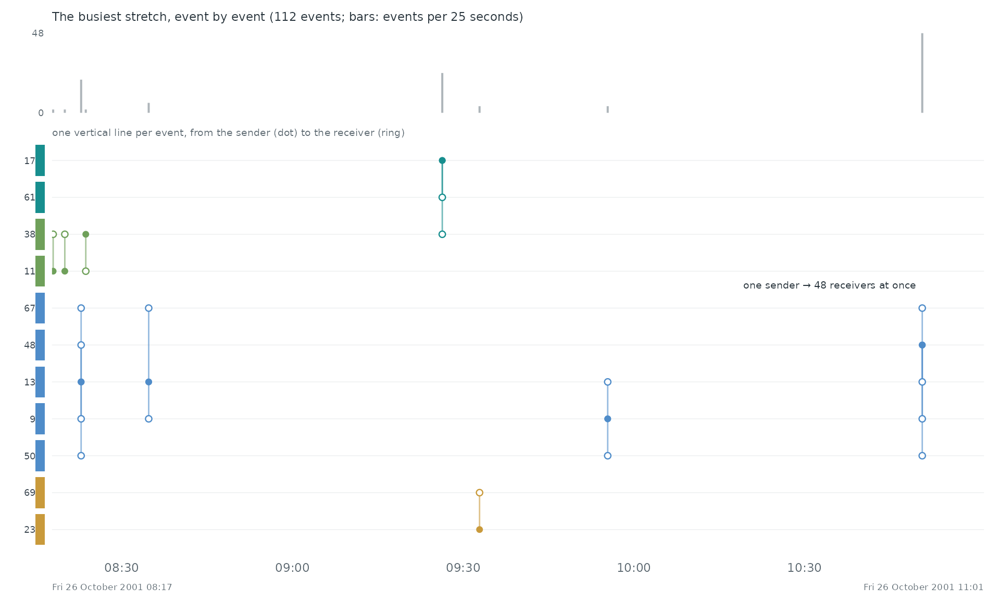
Event by event. The busiest stretch of the record, Fri 26 October 2001 08:17 to Fri 26 October 2001 11:01, event by event: each vertical line is one event between two of the actors above, from the sender (dot) to the receiver (ring).
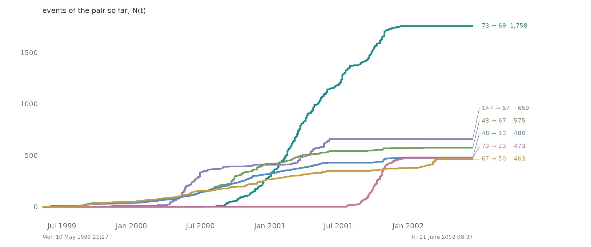
Pairs as counting processes. The counting process N(t) of the 6 busiest pairs: the number of events of the pair up to time t. Together they make 9.4% of all events. Steep stretches are bursts and flat ones silences.
Statistical profile.
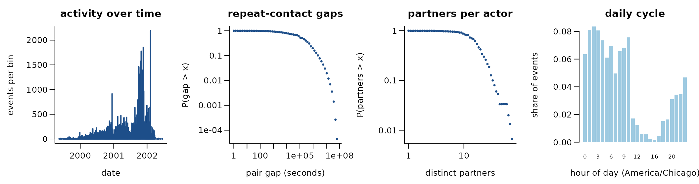
47,088 directed events among 150 actors over 1,137.5 days (2,149 distinct ordered pairs). 95.4% of events repeat an earlier ordered pair; if every event chose a pair at random the share would be 58.3%. 73.1% of events answer an earlier event in the opposite direction. The burstiness coefficient of the gaps between successive events of the same pair is 0.51 (0 for a Poisson process, positive when events cluster in bursts); the most active tenth of the actors take part in 42.3% of events (Gini 0.57). 68.5% of events share their time stamp with an earlier one. Enron employees, 1999-2002
A conditional logit on the first 4,000 events (one sampled control per event) gives:
| term | estimate | s.e. |
|---|---|---|
| log(1 + sender’s past events) | 0.89 | 0.05 |
| log(1 + receiver’s past events received) | 0.48 | 0.05 |
| log(1 + past events receiver -> sender) | 1.08 | 0.15 |
Get the data
download.file("https://nrvis.com/download/data/dynamic/ia-enron-employees.zip", "ia-enron-employees.zip", mode = "wb")A reader that turns these files into a
(sender, receiver, time) table is
readers[["nr-ia-enron-employees"]] in data-raw/catalogue/readers.R.
eventnet example data (Enron, Apache, Wikipedia hyperevents)
Source: https://github.com/juergenlerner/eventnet · Licence: GPL-3.0 (source repository/package) · Status in amorem: GPL-3: redistributable only inside a GPL-compatible package.
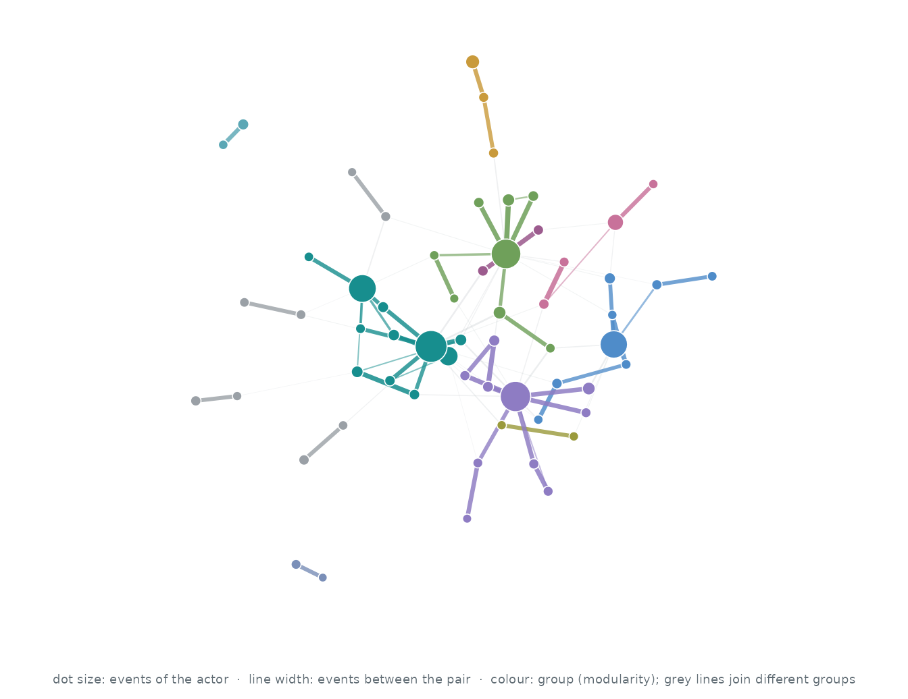
Who interacts with whom. The 60 actors of the busiest pairs, out of 6,062; events between two of them are 2.8% of all events. Each actor’s three strongest ties are drawn (92 of 103 pairs that ever interacted): wider, darker lines carry more events, larger dots are more active actors, and colours are groups found by modularity (Louvain).
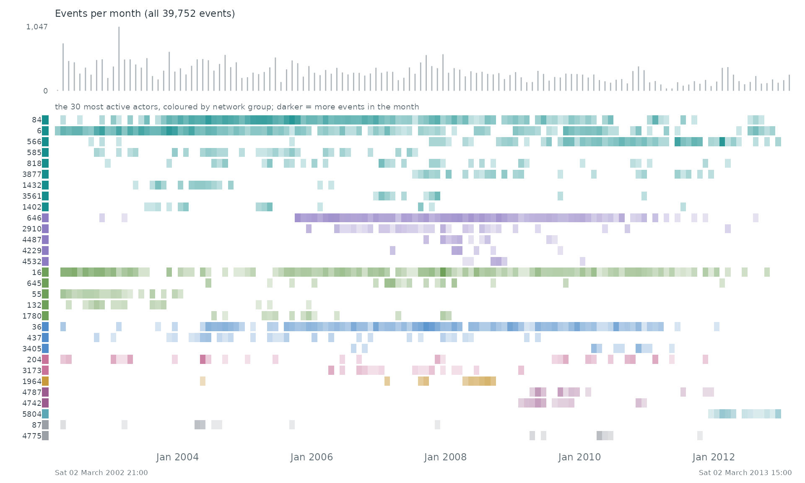
When. Each row is one of the 30 most active actors of the network, coloured by its group there; a cell is darker the more events (with anyone) the actor took part in during that stretch of time. The grey bars on top count all 39,752 events.
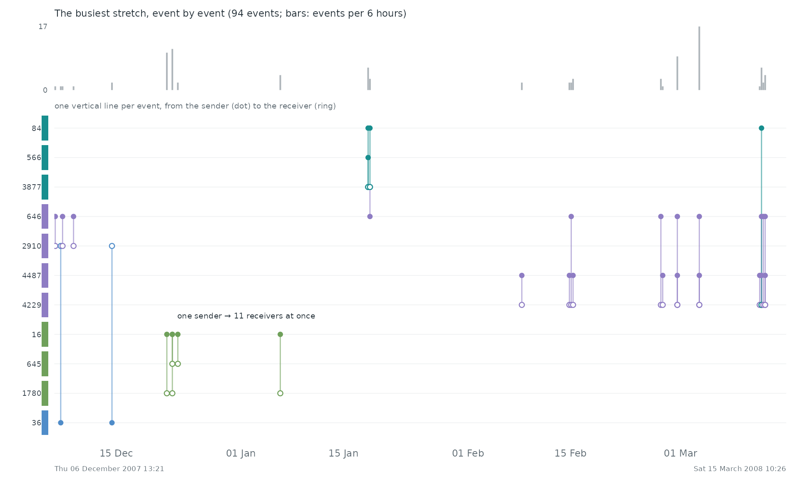
Event by event. The busiest stretch of the record, Thu 06 December 2007 13:21 to Sat 15 March 2008 10:26, event by event: each vertical line is one event between two of the actors above, from the sender (dot) to the receiver (ring).
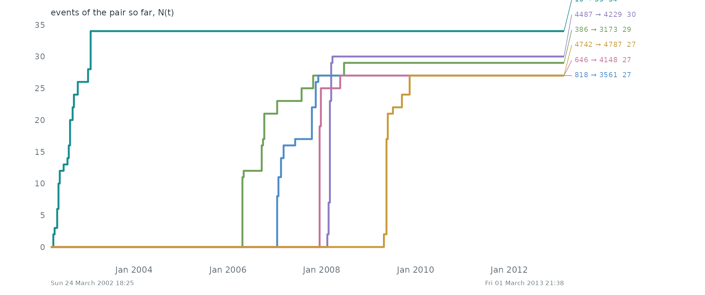
Pairs as counting processes. The counting process N(t) of the 6 busiest pairs: the number of events of the pair up to time t. Together they make 0.4% of all events. Steep stretches are bursts and flat ones silences.
Statistical profile.
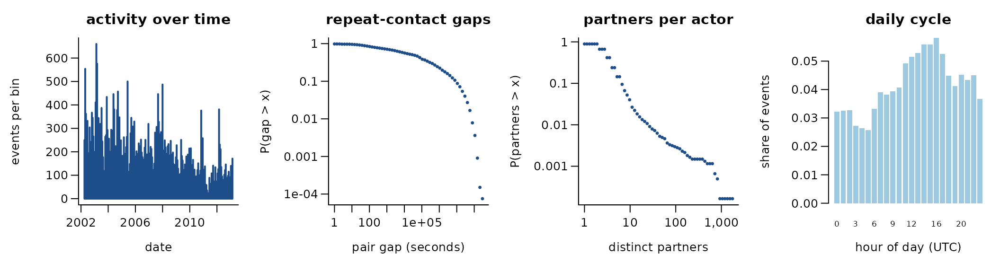
39,752 directed events among 6,062 actors over 3,995.1 days (16,159 distinct ordered pairs). 59.4% of events repeat an earlier ordered pair; if every event chose a pair at random the share would be 0.1%. 0.1% of events answer an earlier event in the opposite direction. The burstiness coefficient of the gaps between successive events of the same pair is 0.56 (0 for a Poisson process, positive when events cluster in bursts); the most active tenth of the actors take part in 51.9% of events (Gini 0.59). 28.1% of events share their time stamp with an earlier one. Apache developer communication (eventnet); also holds Enron, DGG and Les Miserables
A conditional logit on the first 4,000 events (one sampled control per event) gives:
| term | estimate | s.e. |
|---|---|---|
| log(1 + sender’s past events) | 1.14 | 0.05 |
| log(1 + receiver’s past events received) | 0.39 | 0.05 |
| log(1 + past events receiver -> sender) | 0.83 | 0.87 |
Get the data
download.file("https://raw.githubusercontent.com/juergenlerner/eventnet/master/data/enron/README.md", "enron_README.md", mode = "wb")
download.file("https://raw.githubusercontent.com/juergenlerner/eventnet/master/data/enron/enron_events.csv", "enron_enron_events.csv", mode = "wb")
download.file("https://raw.githubusercontent.com/juergenlerner/eventnet/master/data/enron/enron_preprocess.R", "enron_enron_preprocess.R", mode = "wb")
download.file("https://raw.githubusercontent.com/juergenlerner/eventnet/master/data/apache/README.md", "apache_README.md", mode = "wb")
download.file("https://raw.githubusercontent.com/juergenlerner/eventnet/master/data/apache/apache_events.csv", "apache_apache_events.csv", mode = "wb")
download.file("https://raw.githubusercontent.com/juergenlerner/eventnet/master/data/dgg/README.md", "dgg_README.md", mode = "wb")
download.file("https://raw.githubusercontent.com/juergenlerner/eventnet/master/data/dgg/DGG.csv", "dgg_DGG.csv", mode = "wb")
download.file("https://raw.githubusercontent.com/juergenlerner/eventnet/master/data/dgg/dgg_actor_names.txt", "dgg_dgg_actor_names.txt", mode = "wb")
download.file("https://raw.githubusercontent.com/juergenlerner/eventnet/master/data/les_miserables/README.md", "les_miserables_README.md", mode = "wb")
download.file("https://raw.githubusercontent.com/juergenlerner/eventnet/master/data/les_miserables/jean.dat", "les_miserables_jean.dat", mode = "wb")
download.file("https://raw.githubusercontent.com/juergenlerner/eventnet/master/data/les_miserables/jean_events.csv", "les_miserables_jean_events.csv", mode = "wb")
download.file("https://raw.githubusercontent.com/juergenlerner/eventnet/master/data/GHE_basics/README.md", "GHE_basics_README.md", mode = "wb")
download.file("https://raw.githubusercontent.com/juergenlerner/eventnet/master/data/GHE_basics/ghe_publications.csv", "GHE_basics_ghe_publications.csv", mode = "wb")
download.file("https://raw.githubusercontent.com/juergenlerner/eventnet/master/LICENSE", "eventnet_LICENSE", mode = "wb")A reader that turns these files into a
(sender, receiver, time) table is
readers[["eventnet-rhem-data"]] in data-raw/catalogue/readers.R.
Copenhagen Networks Study interaction data
Source: https://doi.org/10.6084/m9.figshare.7267433.v1 ·
Licence: MIT · Status in amorem: bundled as
copenhagen_calls, copenhagen_sms,
copenhagen_actors.
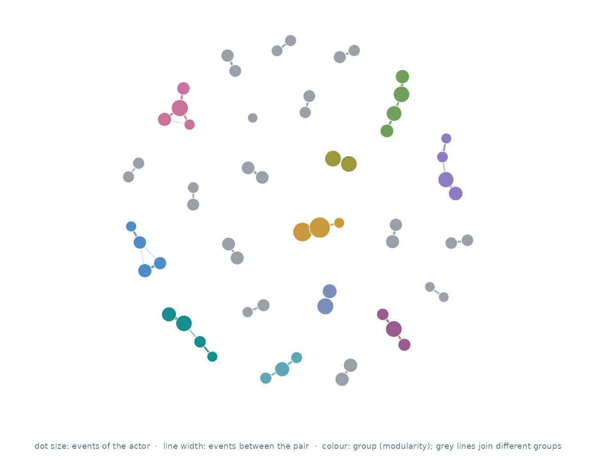
Who interacts with whom. The 60 actors of the busiest pairs, out of 536; events between two of them are 36.0% of all events. Each actor’s three strongest ties are drawn (38 of 38 pairs that ever interacted): wider, darker lines carry more events, larger dots are more active actors, and colours are groups found by modularity (Louvain).
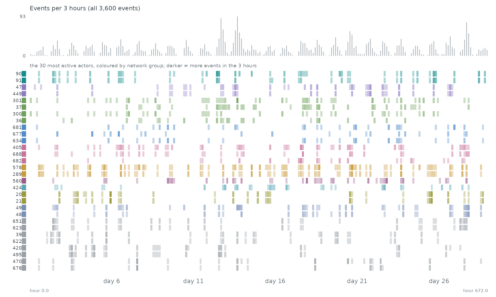
When. Each row is one of the 30 most active actors of the network, coloured by its group there; a cell is darker the more events (with anyone) the actor took part in during that stretch of time. The grey bars on top count all 3,600 events.
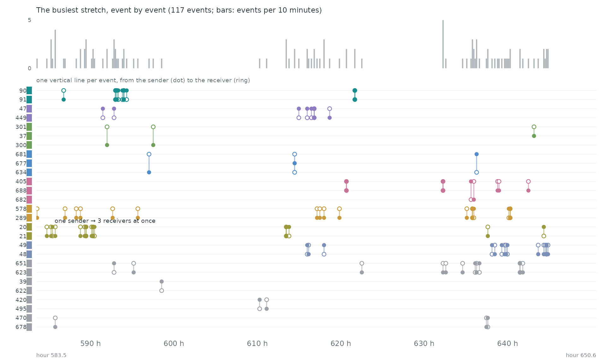
Event by event. The busiest stretch of the record, hour 583.5 to hour 650.6, event by event: each vertical line is one event between two of the actors above, from the sender (dot) to the receiver (ring).
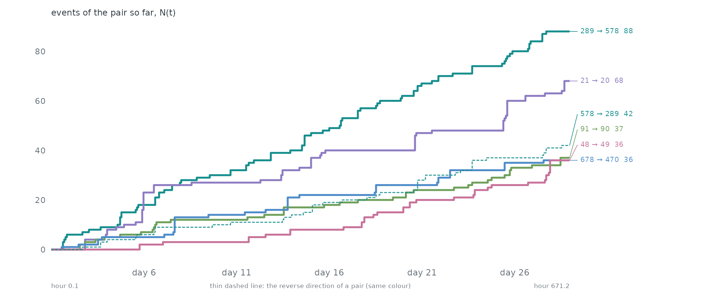
Pairs as counting processes. The counting process N(t) of the 6 busiest pairs: the number of events of the pair up to time t. Together they make 8.5% of all events. Steep stretches are bursts and flat ones silences. 2 of these pairs are the reverse of another, so replies run alongside the messages they answer.
Statistical profile.
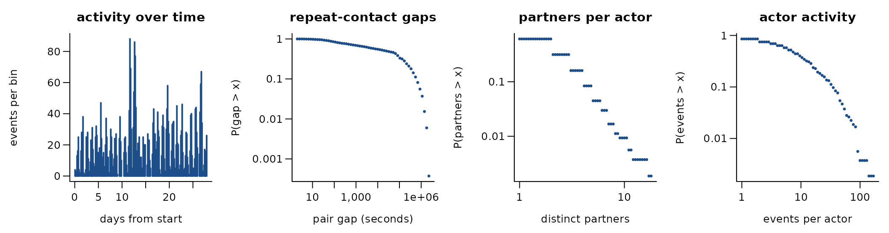
3,600 directed events among 536 actors over 28.0 days (924 distinct ordered pairs). 74.3% of events repeat an earlier ordered pair; if every event chose a pair at random the share would be 0.6%. 66.3% of events answer an earlier event in the opposite direction. The burstiness coefficient of the gaps between successive events of the same pair is 0.29 (0 for a Poisson process, positive when events cluster in bursts); the most active tenth of the actors take part in 42.8% of events (Gini 0.59). phone calls; seconds from the start of the four-week study. The folder also holds SMS, Bluetooth proximity and Facebook friendships
A conditional logit on the first 3,600 events (one sampled control per event) gives:
| term | estimate | s.e. |
|---|---|---|
| log(1 + sender’s past events) | 0.73 | 0.06 |
| log(1 + receiver’s past events received) | 0.35 | 0.06 |
| log(1 + past events receiver -> sender) | 6.69 | 0.66 |
Get the data
download.file("https://ndownloader.figshare.com/files/14574485", "Copenhagen_Networks_Study_Notebook.ipynb", mode = "wb")
download.file("https://ndownloader.figshare.com/files/14039048", "bt_symmetric.README", mode = "wb")
download.file("https://ndownloader.figshare.com/files/14000795", "bt_symmetric.csv", mode = "wb")
download.file("https://ndownloader.figshare.com/files/14127311", "calls.README", mode = "wb")
download.file("https://ndownloader.figshare.com/files/14579972", "calls.csv", mode = "wb")
download.file("https://ndownloader.figshare.com/files/13389839", "fb_friends.README", mode = "wb")
download.file("https://ndownloader.figshare.com/files/13389320", "fb_friends.csv", mode = "wb")
download.file("https://ndownloader.figshare.com/files/13389440", "genders.csv", mode = "wb")
download.file("https://ndownloader.figshare.com/files/14127308", "sms.README", mode = "wb")
download.file("https://ndownloader.figshare.com/files/14579975", "sms.csv", mode = "wb")A reader that turns these files into a
(sender, receiver, time) table is
readers[["copenhagen-networks-study"]] in data-raw/catalogue/readers.R.
statnet relevent workshop data (WTC radio, classroom)
Source: https://github.com/statnet/Workshops----OBSOLETE · Licence: GPL-3.0 (source repository/package) · Status in amorem: GPL-3: redistributable only inside a GPL-compatible package.
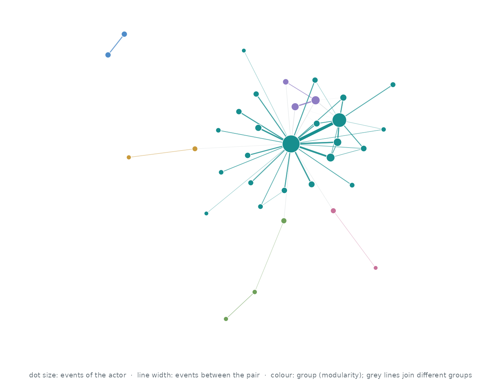
Who interacts with whom. The 35 actors of the busiest pairs, out of 35; events between two of them are 100.0% of all events. Each actor’s three strongest ties are drawn (49 of 49 pairs that ever interacted): wider, darker lines carry more events, larger dots are more active actors, and colours are groups found by modularity (Louvain).
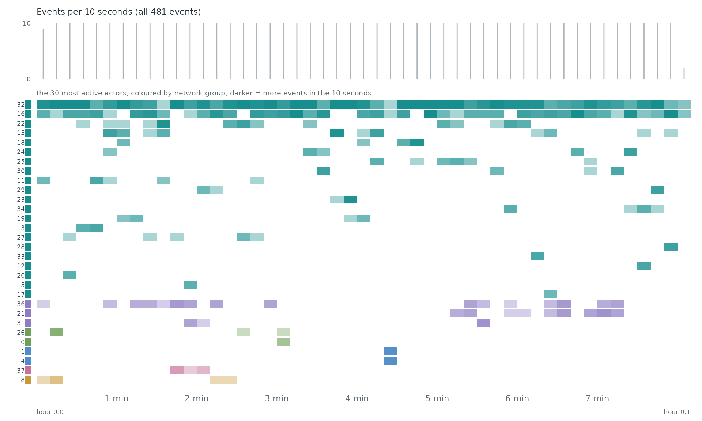
When. Each row is one of the 30 most active actors of the network, coloured by its group there; a cell is darker the more events (with anyone) the actor took part in during that stretch of time. The grey bars on top count all 481 events.
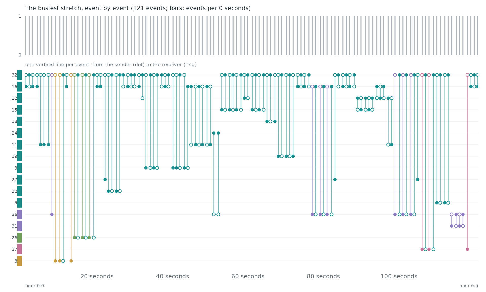
Event by event. The busiest stretch of the record, hour 0.0 to hour 0.0, event by event: each vertical line is one event between two of the actors above, from the sender (dot) to the receiver (ring).
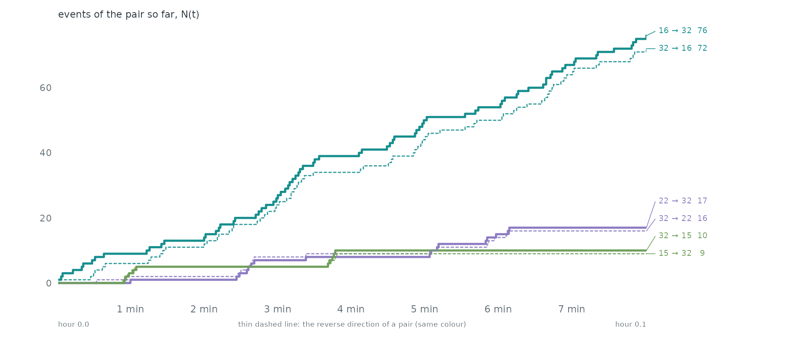
Pairs as counting processes. The counting process N(t) of the 6 busiest pairs: the number of events of the pair up to time t. Together they make 41.6% of all events. Steep stretches are bursts and flat ones silences. 6 of these pairs are the reverse of another, so replies run alongside the messages they answer.
Statistical profile.
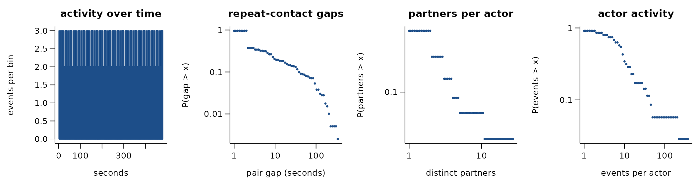
481 directed events among 35 actors over 0.0 days (86 distinct ordered pairs). 82.1% of events repeat an earlier ordered pair; if every event chose a pair at random the share would be 17.7%. 87.1% of events answer an earlier event in the opposite direction. The burstiness coefficient of the gaps between successive events of the same pair is 0.43 (0 for a Poisson process, positive when events cluster in bursts); the most active tenth of the actors take part in 70.2% of events (Gini 0.73). WTC police radio calls on 11 September 2001 (Butts 2008); time in seconds from the first call. Also holds a classroom log
A conditional logit on the first 481 events (one sampled control per event) gives:
| term | estimate | s.e. |
|---|---|---|
| log(1 + sender’s past events) | 0.51 | 0.20 |
| log(1 + receiver’s past events received) | 0.79 | 0.15 |
| log(1 + past events receiver -> sender) | 2.66 | 0.60 |
Get the data
download.file("https://raw.githubusercontent.com/statnet/Workshops----OBSOLETE/master/relevent/relevent_workshop.Rdata", "relevent_workshop.Rdata", mode = "wb")
download.file("https://raw.githubusercontent.com/statnet/Workshops----OBSOLETE/master/relevent/relevent_tutorial.Rmd", "relevent_tutorial.Rmd", mode = "wb")A reader that turns these files into a
(sender, receiver, time) table is
readers[["statnet-relevent-workshop"]] in data-raw/catalogue/readers.R.
4PCAN alter nominations
Source: https://doi.org/10.5281/zenodo.21409040 · Licence: CC BY 4.0 · Status in amorem: may be redistributed with attribution.
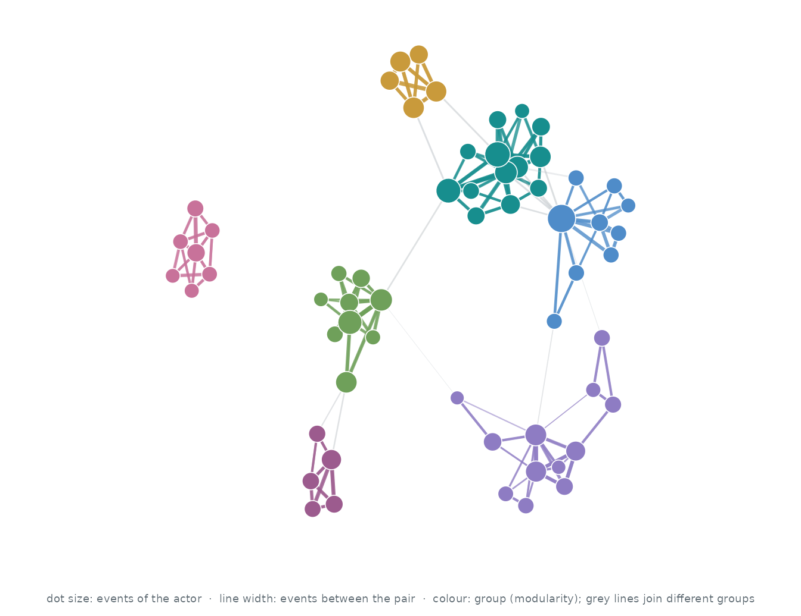
Who interacts with whom. The 60 actors of the busiest pairs, out of 2,491; events between two of them are 7.5% of all events. Each actor’s three strongest ties are drawn (135 of 765 pairs that ever interacted): wider, darker lines carry more events, larger dots are more active actors, and colours are groups found by modularity (Louvain).
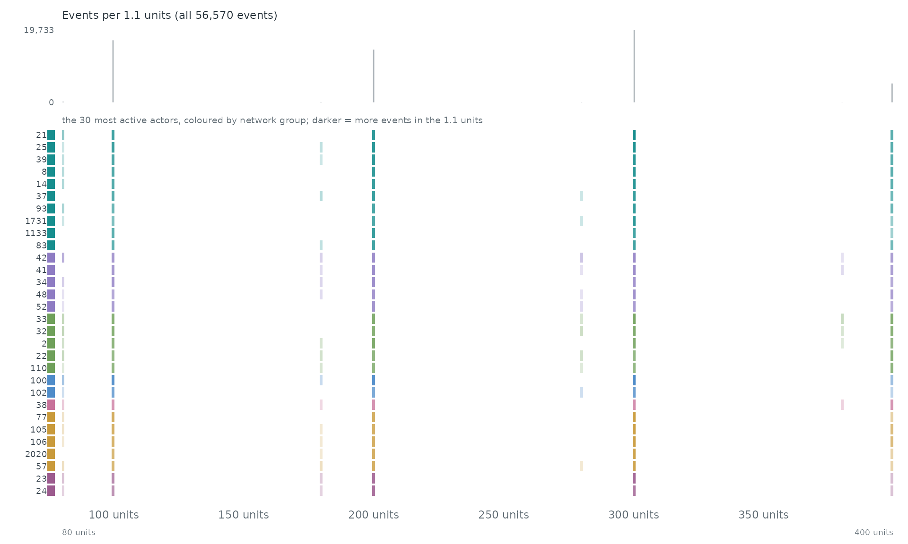
When. Each row is one of the 30 most active actors of the network, coloured by its group there; a cell is darker the more events (with anyone) the actor took part in during that stretch of time. The grey bars on top count all 56,570 events.
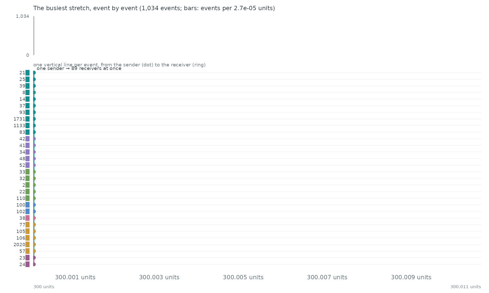
Event by event. The busiest stretch of the record, 300 units to 300.011 units, event by event: each vertical line is one event between two of the actors above, from the sender (dot) to the receiver (ring).
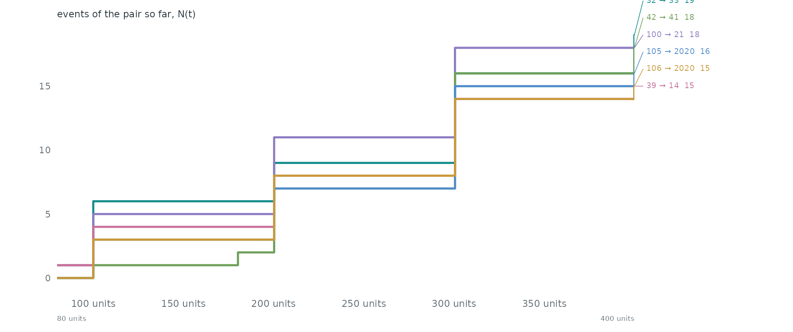
Pairs as counting processes. The counting process N(t) of the 6 busiest pairs: the number of events of the pair up to time t. Together they make 0.2% of all events. Steep stretches are bursts and flat ones silences.
Statistical profile.
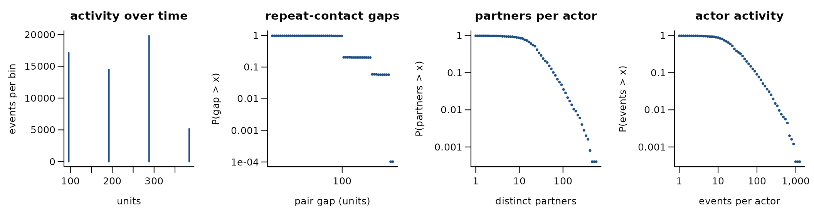
56,570 directed events among 2,491 actors over 320.0 units (42,501 distinct ordered pairs). 24.9% of events repeat an earlier ordered pair; if every event chose a pair at random the share would be 0.5%. 10.6% of events answer an earlier event in the opposite direction. The burstiness coefficient of the gaps between successive events of the same pair is -0.37 (0 for a Poisson process, positive when events cluster in bursts); the most active tenth of the actors take part in 45.3% of events (Gini 0.55). 100.0% of events share their time stamp with an earlier one. alter nominations; time in the units of the release
A conditional logit on the first 4,000 events (one sampled control per event) gives:
| term | estimate | s.e. |
|---|---|---|
| log(1 + sender’s past events) | 2.02 | 0.10 |
| log(1 + receiver’s past events received) | 0.07 | 0.12 |
| log(1 + past events receiver -> sender) | 25.31 | 1808.69 |
Get the data
download.file("https://zenodo.org/records/21409040/files/events.csv?download=1", "events.csv", mode = "wb")A reader that turns these files into a
(sender, receiver, time) table is
readers[["fourpcan-alter-nominations"]] in data-raw/catalogue/readers.R.
networkDynamicData package data
Source: https://cran.r-project.org/package=networkDynamicData · Licence: GPL-3.0 (source repository/package) · Status in amorem: GPL-3: redistributable only inside a GPL-compatible package.
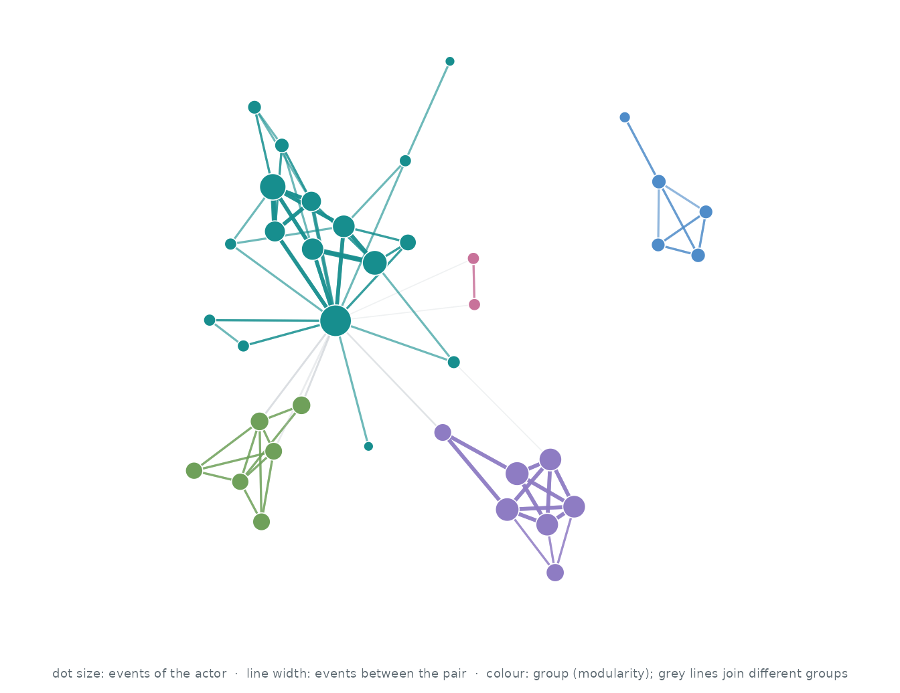
Who interacts with whom. The 37 actors of the busiest pairs, out of 37; events between two of them are 100.0% of all events. Each actor’s three strongest ties are drawn (73 of 116 pairs that ever interacted): wider, darker lines carry more events, larger dots are more active actors, and colours are groups found by modularity (Louvain).
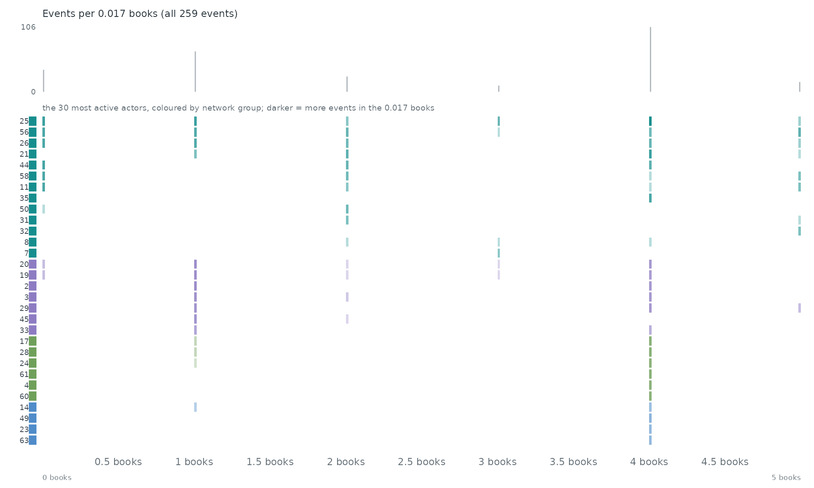
When. Each row is one of the 30 most active actors of the network, coloured by its group there; a cell is darker the more events (with anyone) the actor took part in during that stretch of time. The grey bars on top count all 259 events.
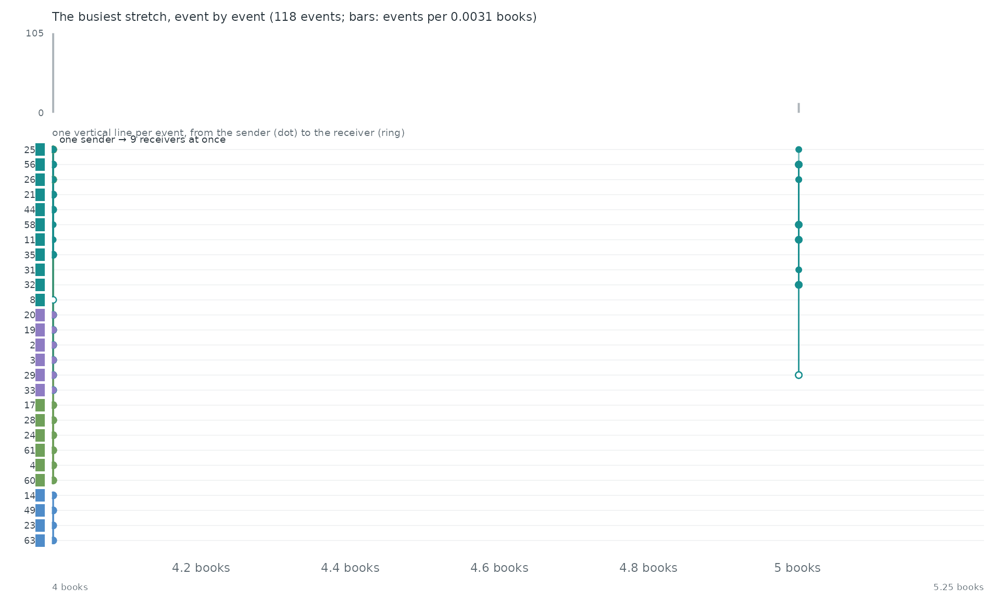
Event by event. The busiest stretch of the record, 4 books to 5.25 books, event by event: each vertical line is one event between two of the actors above, from the sender (dot) to the receiver (ring).
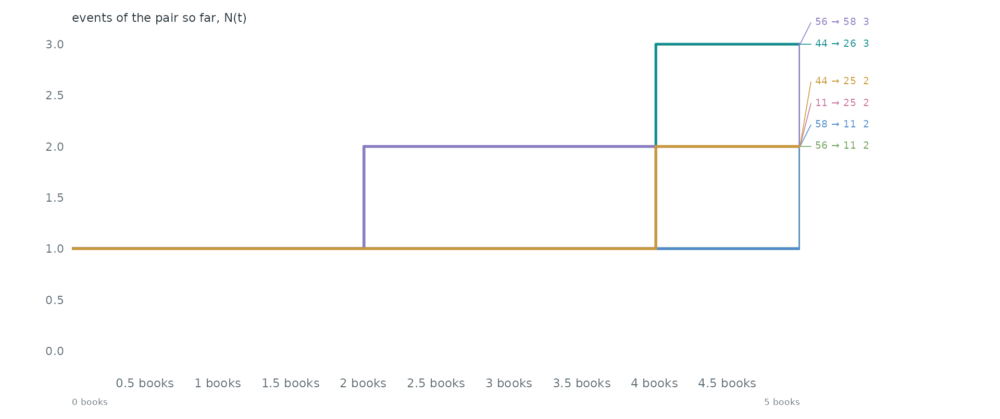
Pairs as counting processes. The counting process N(t) of the 6 busiest pairs: the number of events of the pair up to time t. Together they make 5.4% of all events. Steep stretches are bursts and flat ones silences.
Statistical profile.
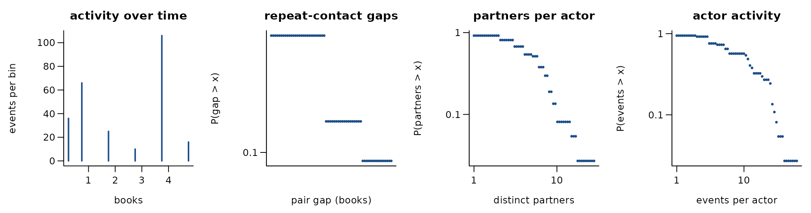
259 directed events among 37 actors over 5.0 books (201 distinct ordered pairs). 22.4% of events repeat an earlier ordered pair; if every event chose a pair at random the share would be 9.1%. 24.7% of events answer an earlier event in the opposite direction. The burstiness coefficient of the gaps between successive events of the same pair is -0.58 (0 for a Poisson process, positive when events cluster in bursts); the most active tenth of the actors take part in 30.9% of events (Gini 0.47). 97.7% of events share their time stamp with an earlier one. support nominations across the seven Harry Potter books (networkDynamicData)
A conditional logit on the first 259 events (one sampled control per event) gives:
| term | estimate | s.e. |
|---|---|---|
| log(1 + sender’s past events) | 0.16 | 0.13 |
| log(1 + receiver’s past events received) | 0.16 | 0.11 |
| log(1 + past events receiver -> sender) | 1.30 | 0.48 |
Get the data
download.file("https://cran.r-project.org/src/contrib/networkDynamicData_0.3.0.tar.gz", "networkDynamicData_0.3.0.tar.gz", mode = "wb")A reader that turns these files into a
(sender, receiver, time) table is
readers[["networkdynamicdata-cran"]] in data-raw/catalogue/readers.R.
KONECT: Dutch college friendship waves (van de Bunt)
Source: http://konect.cc/ · Licence: unknown (site unreachable 2026-10-17) · Status in amorem: no licence stated: not redistributed; obtain from the source.
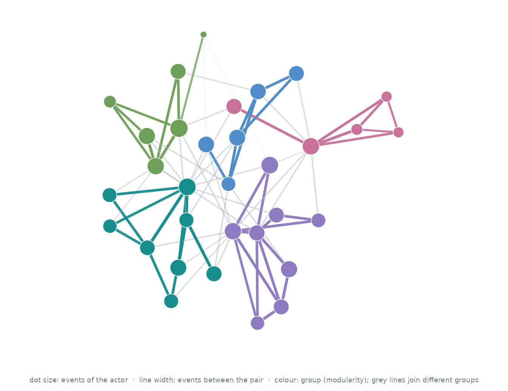
Who interacts with whom. The 32 actors of the busiest pairs, out of 32; events between two of them are 100.0% of all events. Each actor’s three strongest ties are drawn (76 of 422 pairs that ever interacted): wider, darker lines carry more events, larger dots are more active actors, and colours are groups found by modularity (Louvain).
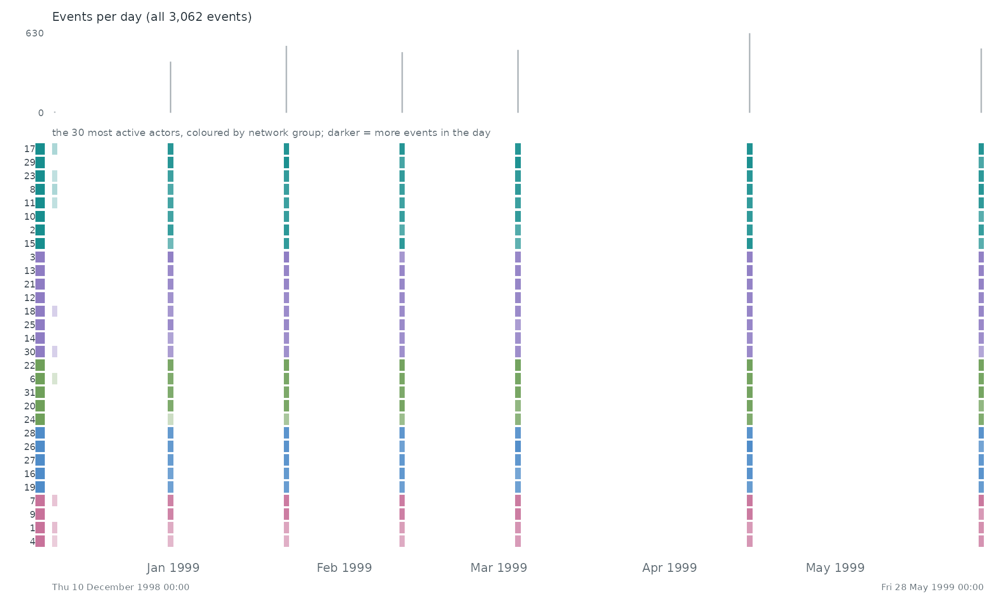
When. Each row is one of the 30 most active actors of the network, coloured by its group there; a cell is darker the more events (with anyone) the actor took part in during that stretch of time. The grey bars on top count all 3,062 events.
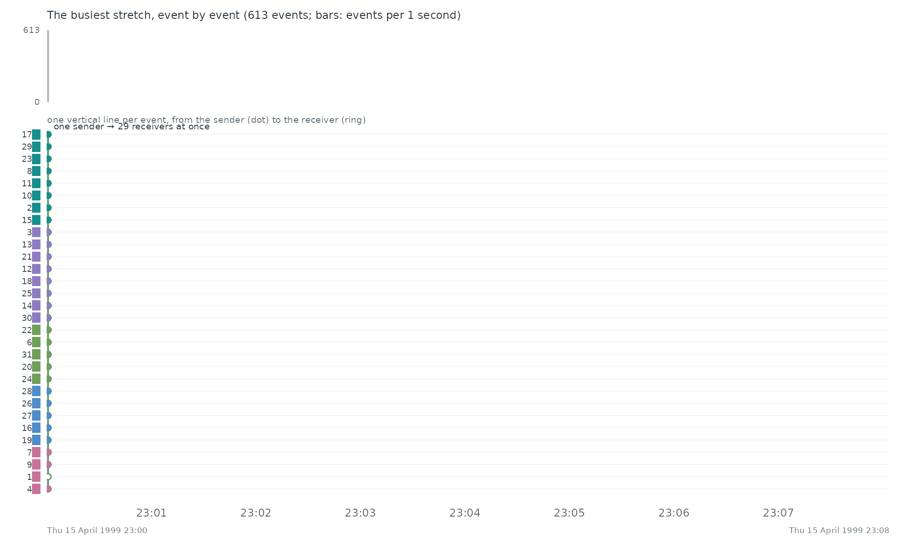
Event by event. The busiest stretch of the record, Thu 15 April 1999 23:00 to Thu 15 April 1999 23:08, event by event: each vertical line is one event between two of the actors above, from the sender (dot) to the receiver (ring).
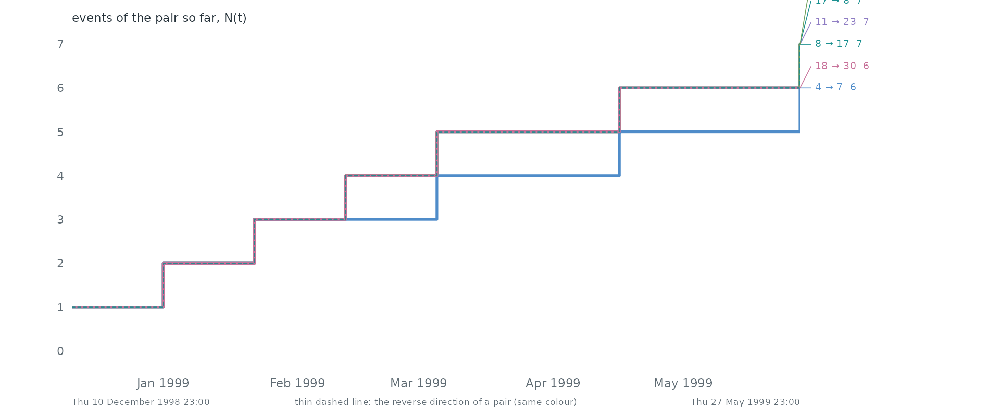
Pairs as counting processes. The counting process N(t) of the 6 busiest pairs: the number of events of the pair up to time t. Together they make 1.3% of all events. Steep stretches are bursts and flat ones silences. 2 of these pairs are the reverse of another, so replies run alongside the messages they answer.
Statistical profile.
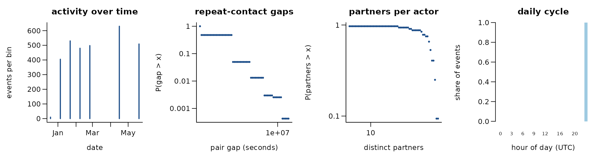
3,062 directed events among 32 actors over 168.0 days (710 distinct ordered pairs). 76.8% of events repeat an earlier ordered pair; if every event chose a pair at random the share would be 69.1%. 62.1% of events answer an earlier event in the opposite direction. The burstiness coefficient of the gaps between successive events of the same pair is -0.40 (0 for a Poisson process, positive when events cluster in bursts); the most active tenth of the actors take part in 17.7% of events (Gini 0.18). 99.8% of events share their time stamp with an earlier one. seven survey waves; rating in the weight column
A conditional logit on the first 3,062 events (one sampled control per event) gives:
| term | estimate | s.e. |
|---|---|---|
| log(1 + sender’s past events) | 0.57 | 0.04 |
| log(1 + receiver’s past events received) | 0.49 | 0.06 |
| log(1 + past events receiver -> sender) | 0.25 | 0.05 |
Get the data
download.file("http://konect.cc/files/download.tsv.moreno_vdb.tar.bz2", "download.tsv.moreno_vdb.tar.bz2", mode = "wb")A reader that turns these files into a
(sender, receiver, time) table is
readers[["konect-dutch-college"]] in data-raw/catalogue/readers.R.